Mamaearth vs Minimalist
Two of India's biggest digital-first skincare brands, built on opposite promises. One sells nature. The other sells proof. This audit examines both using a standard brand audit framework.
Mamaearth has reach and momentum but a trust gap. Minimalist has trust and clarity but a scale test ahead. Each brand's next chapter depends on building what the other already has.
What this audit covers, and how.
Objectives
- Assess each brand's identity, positioning and marketing mix (brand inventory).
- Assess how customers and the market perceive each brand (brand exploratory).
- Benchmark both against each other and key competitors.
- Score brand health and recommend priorities.
Method
- Framework: Keller's brand audit (inventory + exploratory) and the CBBE brand equity pyramid.
- Evidence: company filings and results, brand websites, social profiles, press coverage, ASCI complaint reports, review platforms.
- Scoring: 1–5 per criterion, evidence-linked, adjustable weights.
Limitations
This is a desk audit using public information only. A full client audit would add internal data (sales by SKU, retention cohorts, brand tracking) and primary research (consumer survey, interviews). Scores are the auditor's evidence-based judgement. Mamaearth figures are partly reported at parent-company (Honasa) level.
The two brands at a glance.
What each brand says it is.
The supply side of the audit: brand elements, promise and positioning, assessed against Keller's criteria for strong brand elements (memorable, meaningful, likeable, transferable, adaptable, protectable).
| Element | Mamaearth | Minimalist |
|---|---|---|
| Name | Warm, maternal, nature-led. Rooted in baby care, which makes it harder to stretch into Gen Z skincare. MEANINGFUL, LESS TRANSFERABLE | Describes the philosophy exactly. Generic word, so harder to protect and easy for others to echo. MEANINGFUL, LESS PROTECTABLE |
| Tagline / mission | "Goodness Inside" and #GoodnessInside; toxin-free, plastic-positive, cruelty-free11 | #HideNothing; "efficacious, transparent and comprehensive"712 |
| Visual identity | Bright, colourful, ingredient imagery (onion, ubtan, rice). Varies by range. LIKEABLE, LESS CONSISTENT | Clinical, white, typographic; the active and its percentage on the front of pack. DISTINCTIVE, CONSISTENT |
| Tone of voice | Emotional, family, "maa ka nuskha"; recently Gen Z-led communication3 | Rational, educational; "more like a chemistry class than a beauty campaign"14 |
| Point of difference | Natural and toxin-free. Once unique; now claimed widely and criticised as unproven18. ERODED | Full ingredient disclosure with concentrations and clinical data. STRONG, BUT COPYABLE |
| Points of parity | Dermatologically tested, affordable, available everywhere. | Affordable, dermatologist-tested, broad routine coverage. |
For young families and conscious consumers, Mamaearth is the personal care brand with natural goodness inside, because it's made without harmful toxins.
Finding: the "why believe" (toxin-free) is the most contested part of the statement.
For ingredient-aware skincare buyers, Minimalist is the actives brand that shows you exactly what's inside, because it discloses every ingredient and its percentage.
Finding: the "why believe" is built into the pack itself, the strongest possible proof.
What each brand actually does.
| 4P | Mamaearth | Minimalist |
|---|---|---|
| Product | Broad range (200+ products) across baby, skin, hair and body15. Hero SKUs: Ubtan Face Wash, Onion Shampoo; Rice Face Wash reached a ₹100 cr annual run rate2. | Focused actives portfolio: serums, cleansers, moisturisers, sunscreens, hair care. Hero: Niacinamide 10% serum, 4.3★ from 125,000+ Amazon ratings16. |
| Price | Mass-premium, laddered across a very wide range; premium justified by "natural" claims, which critics dispute18. | Accessible for actives: Niacinamide 10% serum at ₹599 MRP16, priced so people can "test and play" with ingredients. |
| Place | Omnichannel: D2C, marketplaces and 40,000+ points of sale15; offline distribution restructured and being rebuilt18. | Digital-first: D2C, Amazon, Nykaa, Flipkart. Under HUL, offline footprint planned from 3,000 to 40,000 stores5. |
| Promotion | High-volume influencer marketing (5,000–6,000 collaborations a month, per its chairman)19, celebrity films, campaigns like "Maa Paas Nahi, Toh Mamaearth Hi Sahi"15. | Niche expert skincare creators and educational content14. Ad spend rose 55% to ₹235 cr in FY266. |
Auditor's note
The two brands' marketing mixes mirror their promises. Mamaearth wins on breadth and reach. Minimalist wins on focus and product-led proof. The mixes are now converging: Mamaearth is getting more focused (hero SKUs, "category-first") while Minimalist is getting broader (mass offline, higher ad spend).
What the market thinks.
The demand side of the audit: brand associations, sentiment and trust, from press, expert commentary, reviews and regulators.
Top associations
natural · toxin-free · onion shampoo · baby care · influencers · everywhere · "Shark Tank founder"
Sentiment themes
Trust verdict: AT RISK
Top associations
transparent · science · percentages · niacinamide · affordable actives · no-nonsense
Sentiment themes
Trust verdict: STRONG
Note: review-platform complaints are individual accounts and are treated as signals to monitor, not proof of systemic issues.
How each brand shows up online.
| Metric | Mamaearth | Minimalist |
|---|---|---|
| Instagram followers | 1.6M (July 2026)11 | 536K12 |
| Bio positioning | "Spreading #GoodnessInside one little choice at a time!" with plastic-positive, toxin-free, cruelty-free emoji list11 | "Efficacious, transparent & comprehensive. Proven science & tested by Dermats." plus #HideNothing12 |
| Engagement | Estimated 0.04% engagement rate, around 565 likes a post (third-party tool)11. LOW FOR SIZE | Not measured here; to verify with a social listening tool in a full audit. |
| Content style | Product-led, celebrity and influencer driven, trend-reactive. | Educational, ingredient explainers, routine-building. |
| Influencer model | Volume: thousands of collaborations a month19. | Selective: niche skincare experts with credible audiences14. |
| Compliance | Most-flagged beauty company for influencer disclosure in FY269. HIGH RISK | No brand-specific flags found; parent HUL had 12 influencer cases in FY269. MONITOR |
Auditor's note
Mamaearth has three times the audience but, on third-party estimates, very low engagement for its size, a sign that reach is being bought rather than earned. Minimalist's smaller audience is built on content people use, which matches its high repeat-purchase rate.
Where they sit in the market.
Reading the map
Science-led skincare has become the most crowded, fastest-moving space. Minimalist sits at its accessible end; Honasa's own The Derma Co sits nearby.
Key tension for Mamaearth: its sister brand already owns "science", so Mamaearth must win the nature side on credibility, not just claims.
Key tension for Minimalist: The Ordinary pioneered the transparent-actives model globally, so Minimalist's difference must come from Indian skin needs, price and education.
Positions are the auditor's qualitative assessment of brand communication and pricing.
How strong is each brand, level by level?
Keller's customer-based brand equity model builds from awareness at the base to loyalty at the top. Tap a level to see the evidence.
Strengths, weaknesses, opportunities, threats.
| Strengths | Huge awareness and distribution; proven hero products; parent now highly profitable; fast innovation. |
| Weaknesses | Contested core claim; ad-compliance record; low organic engagement; name rooted in baby care. |
| Opportunities | Re-prove "natural" with evidence; Gen Z communication already working; offline rebuild. |
| Threats | Regulatory scrutiny of claims; science-led rivals (including its own sister brand); influencer fatigue. |
| Strengths | Clear, credible promise; distinctive packaging; high repeat purchase; fast, profitable growth. |
| Weaknesses | Lower awareness than mass brands; rational, less emotional brand; generic, copyable name. |
| Opportunities | HUL's offline reach; international markets; owning skincare education in India. |
| Threats | Perceived dilution under HUL; many copycat "percentage" brands; any transparency slip-up. |
The scores, weighted.
Each criterion is scored 1–5 based on the evidence above. Weights reflect what matters most for a skincare brand in 2026. Change the weights to test a different point of view.
What each brand should do next.
Prioritised by impact on brand health, with the effort each would take.
Mamaearth needs to prove what it promises. Minimalist needs to keep promising what it proves. Trust is now the real battleground in Indian skincare.
The audit, made shareable.
Four kinds of assets I designed for this strategy: an Instagram carousel, Stories, widescreen pieces and a print piece. Scroll each row, or open the originals in Canva.
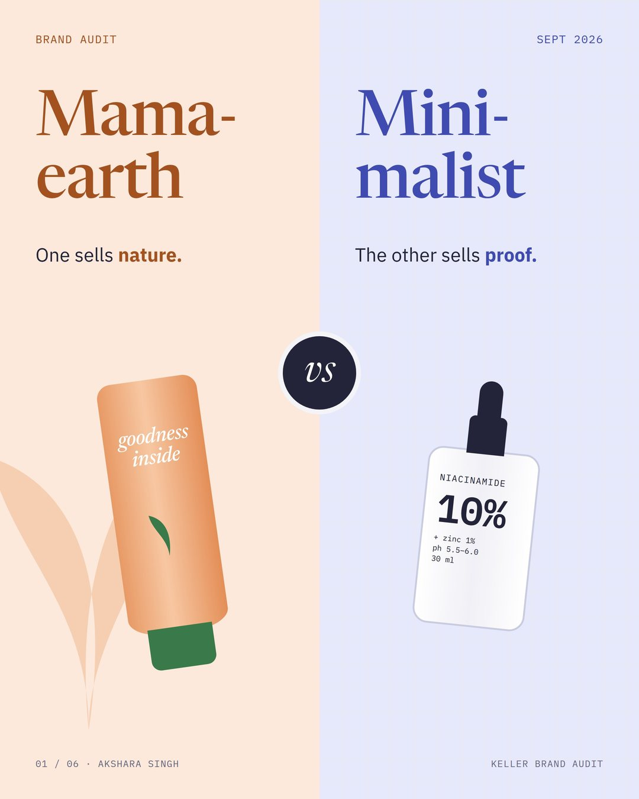
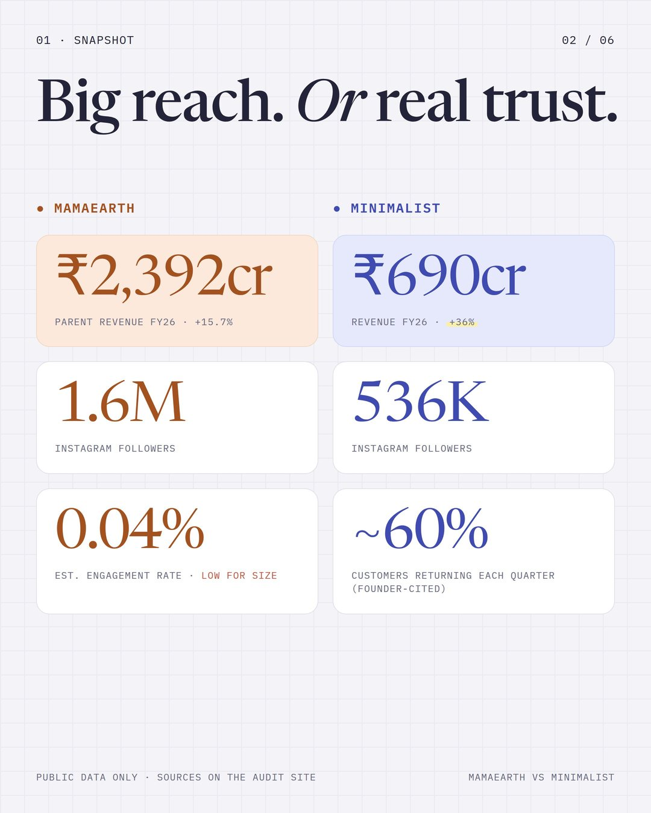
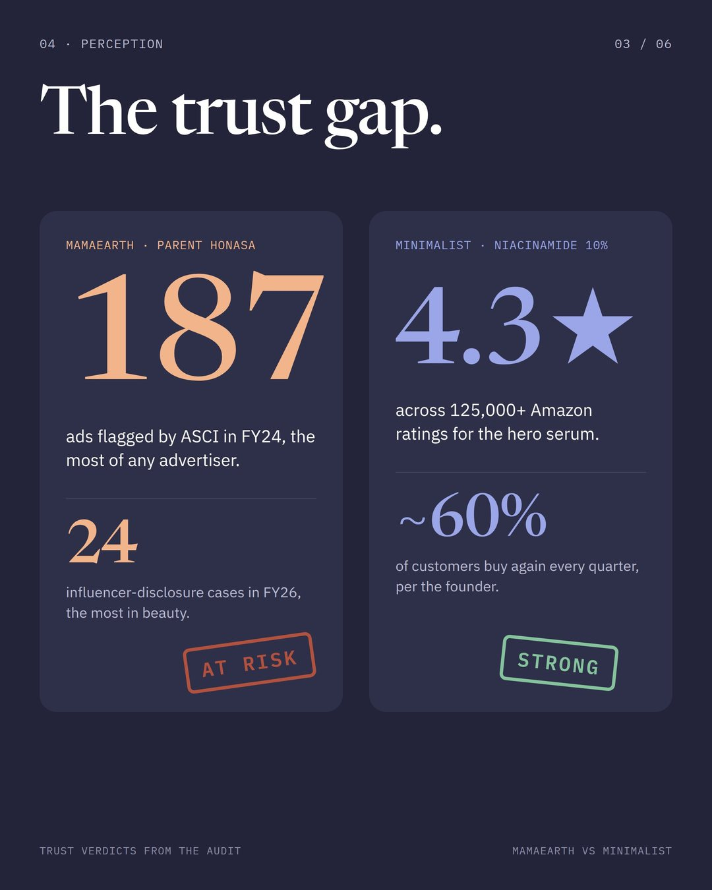
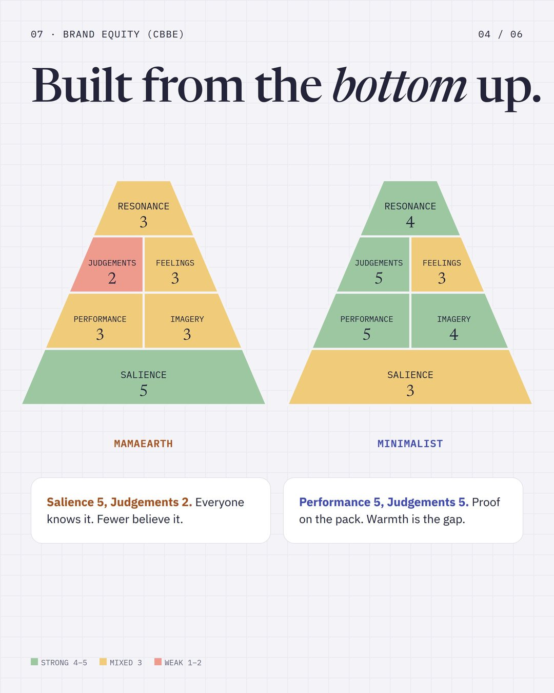
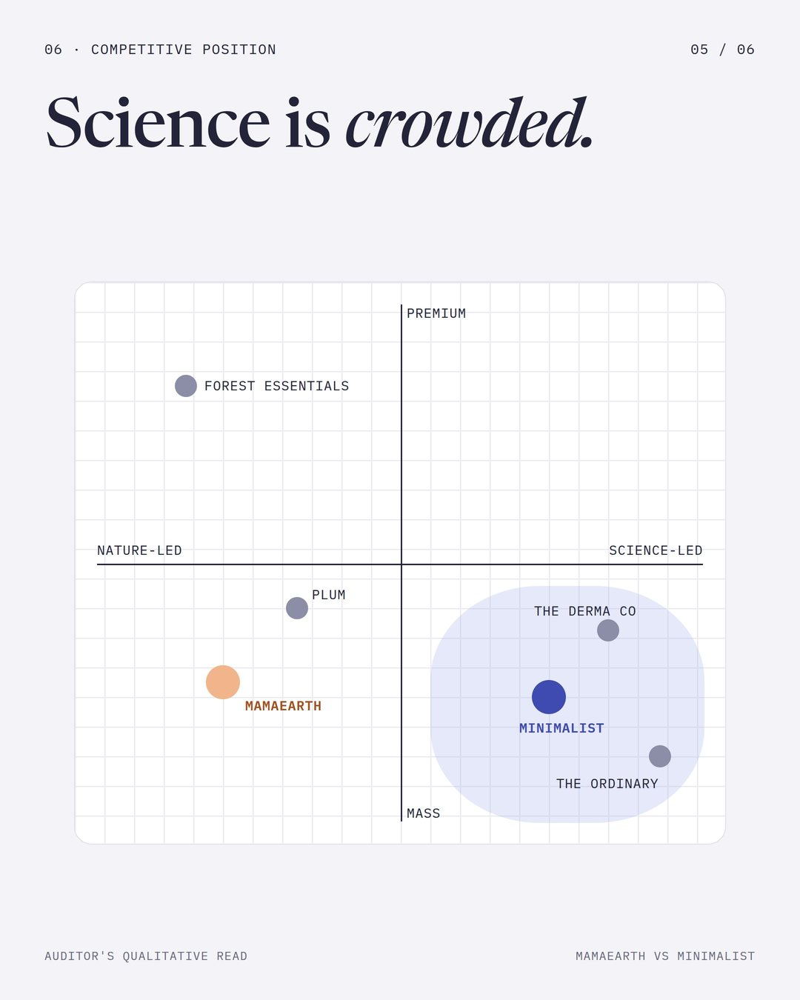
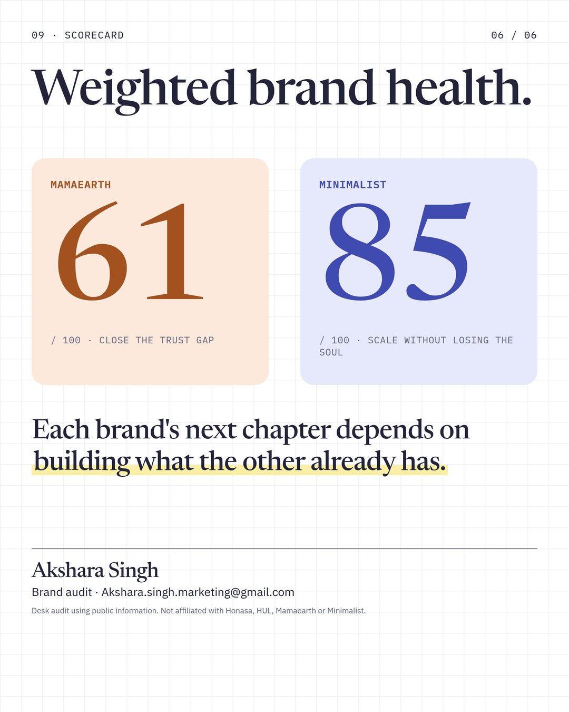
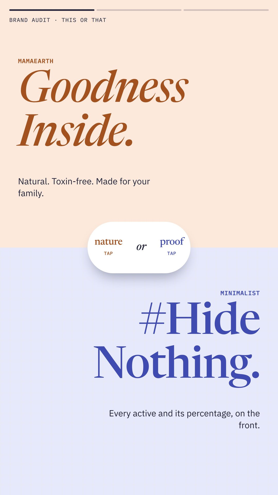
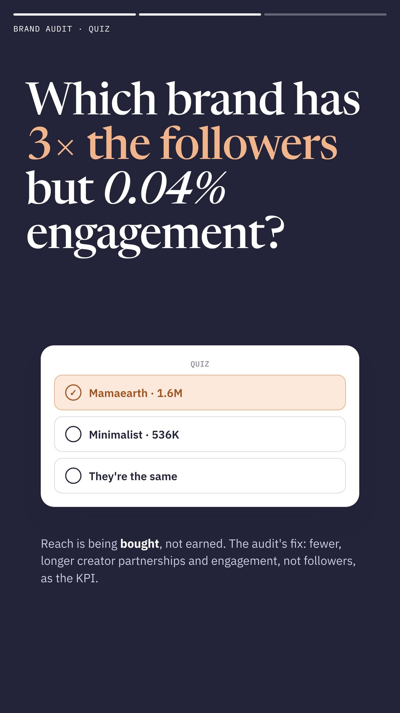
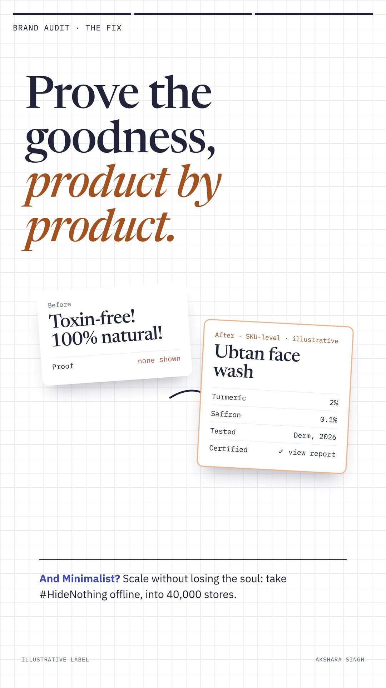
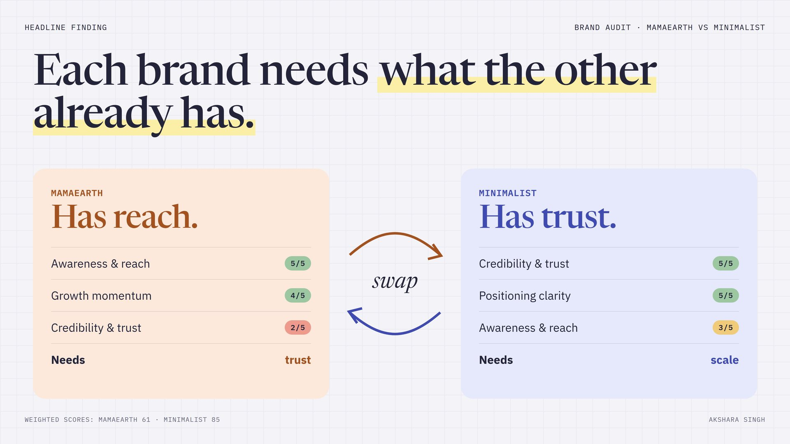
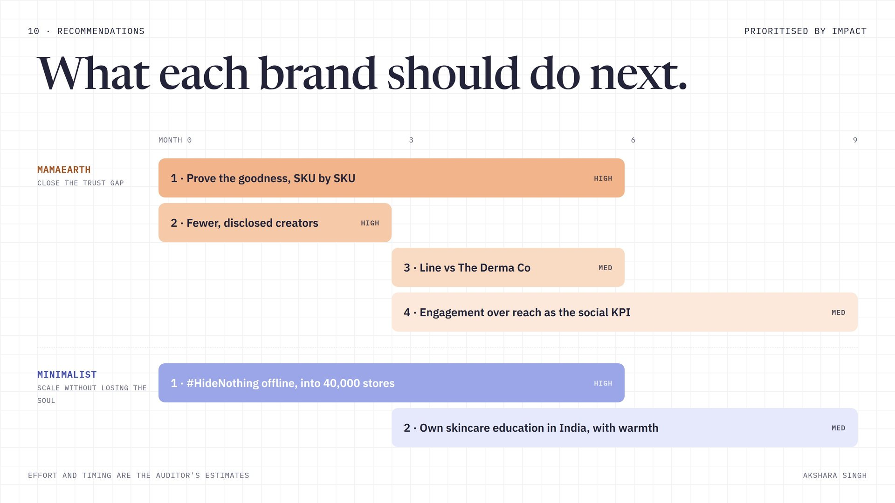
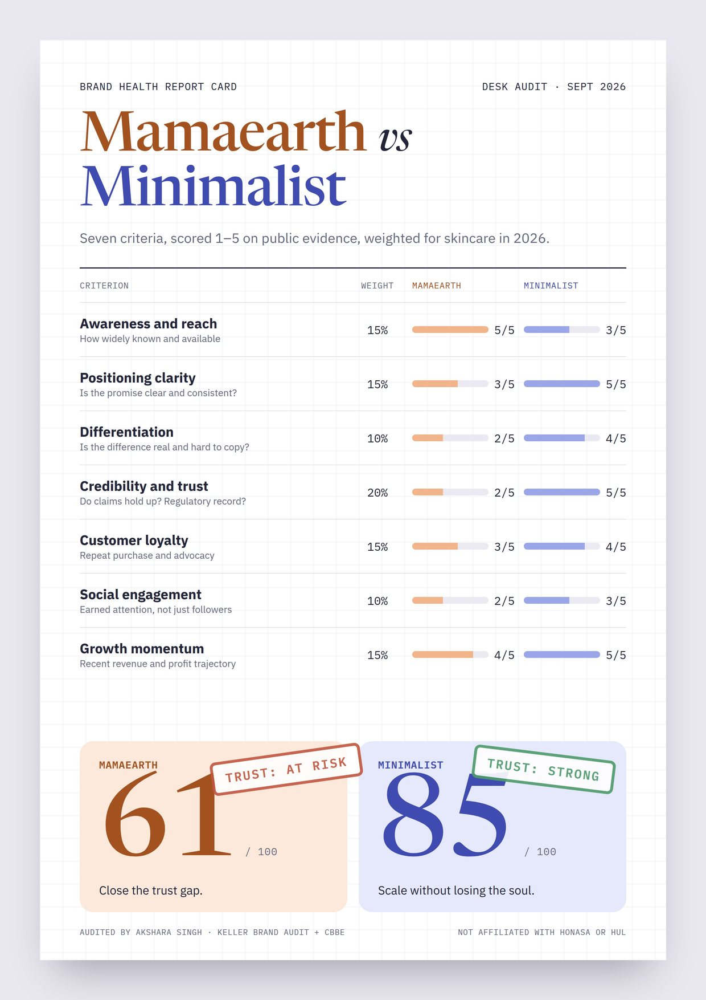
Evidence log.
- D2C Insider Pulse, "Mamaearth parent Honasa Consumer posts 3X profit growth in Q4 as FY26 revenue crosses ₹2,390 crore", May 2026. Link
- Bharat Fast, "Honasa Consumer FY26 profit jumps 175% as Mamaearth, The Derma Co drive strong growth", May 2026. Link
- BW Disrupt, "Honasa Consumer Q3 FY26 profit soars 93%", Feb 2026. Link
- Entrackr, "HUL-owned Minimalist nears Rs 700 Cr income in FY26", Aug 2026. Link
- Inc42, "HUL-owned Minimalist turns profitable in FY26", Aug 2026. Link
- Ascendants, "Minimalist spends Rs 235 Cr on advertising as FY26 revenue jumps 36%", Aug 2026. Link
- Unilever, "HUL to acquire premium beauty brand Minimalist", Jan 2025. Link
- Storyboard18, "Mamaearth-parent Honasa Consumer has highest number of ad violations: ASCI", May 2024. Link
- Storyboard18, "Honasa, L'Oréal and HUL top ASCI's influencer disclosure violations list in FY26", May 2026. Link
- Storyboard18, "Unearthing Mamaearth: decoding consumer feedback", Sept 2024. Link
- Qoruz, Mamaearth Instagram profile statistics, July 2026. Link
- Minimalist, Instagram profile (@beminimalist__). Link
- Deep Dive Blogs, "Inside Minimalist's breakthrough in India's beauty market", Nov 2024 (citing the founder on a podcast). Link
- Laffaz, "How Minimalist's influencer strategy led to a ₹2,955 Cr exit", Apr 2026. Link
- Honasa Consumer, BSE filing on the "Maa Paas Nahi, Toh Mamaearth Hi Sahi" campaign, May 2024. Link
- DermFND, Minimalist 10% Niacinamide Face Serum analysis, May 2026. Link
- Trustpilot, Minimalist customer reviews, 2026. Link
- Value for Startups, "Mamaearth business model", May 2026. Link
- Storyboard18, "95% of ASCI ad violation allegations are influencer posts: Varun Alagh", May 2024. Link